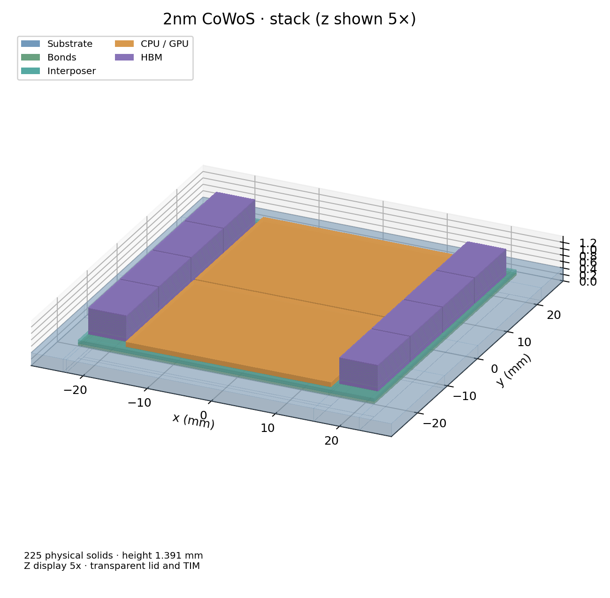
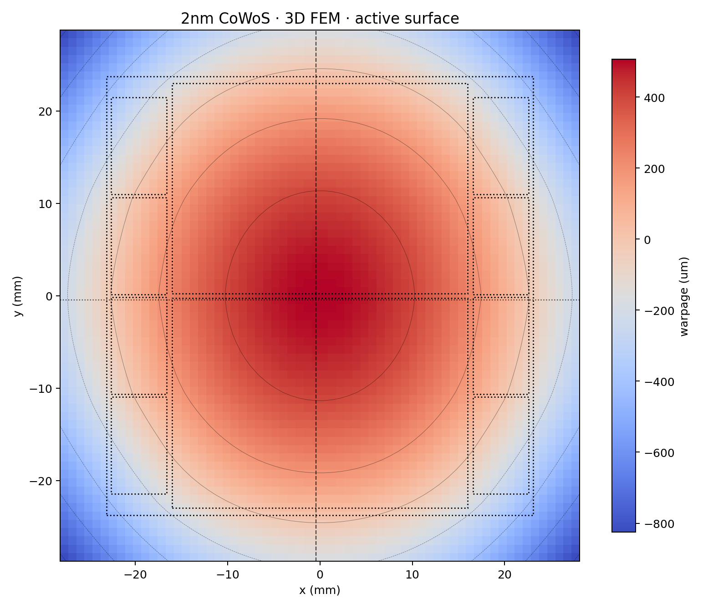
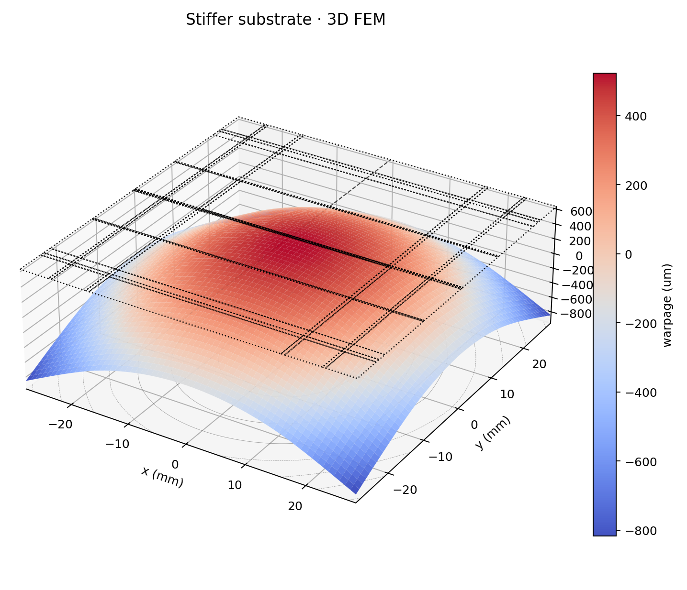
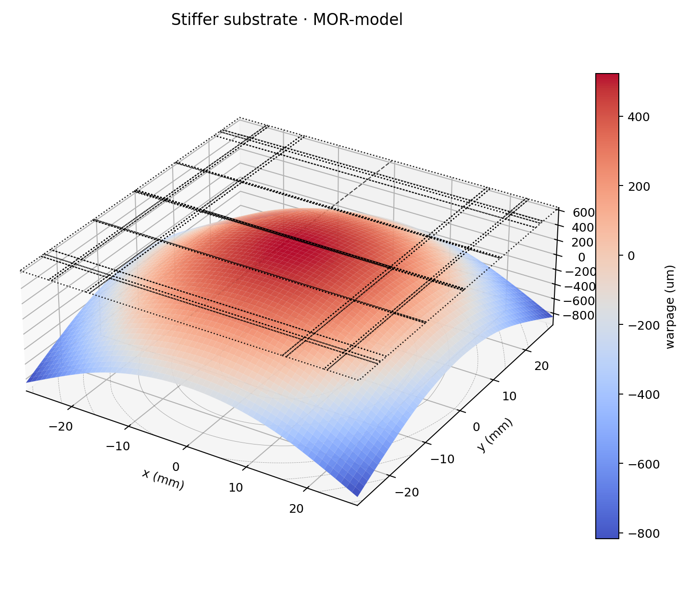
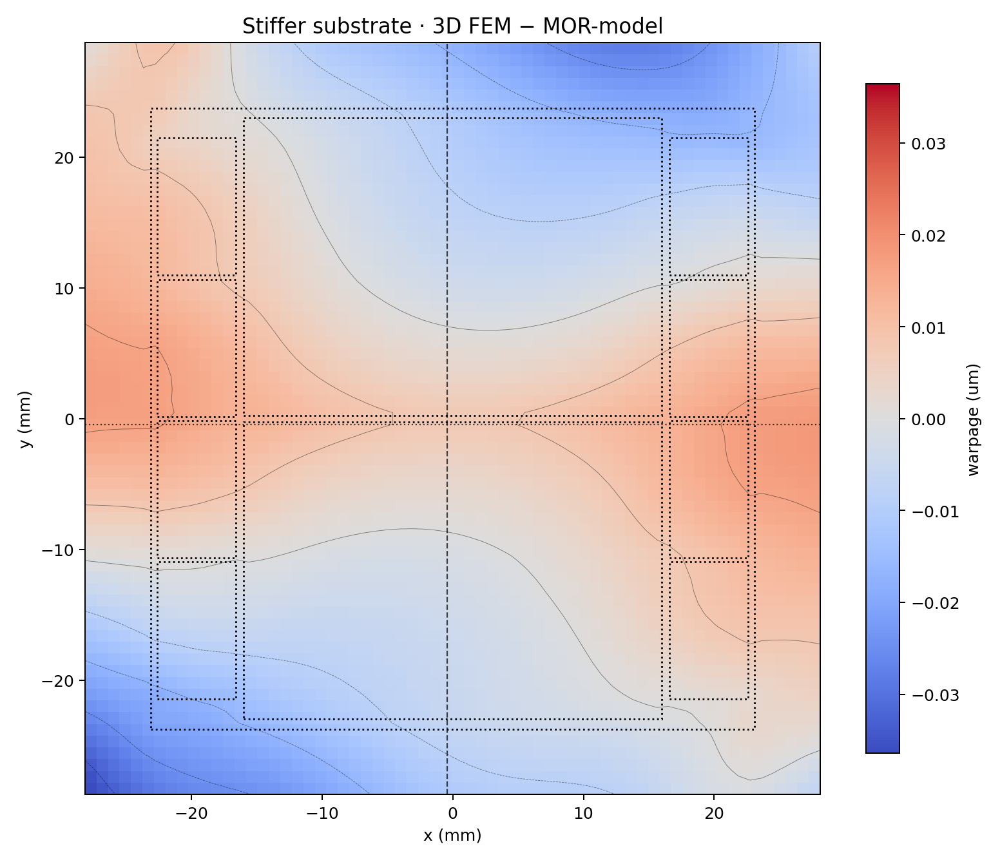
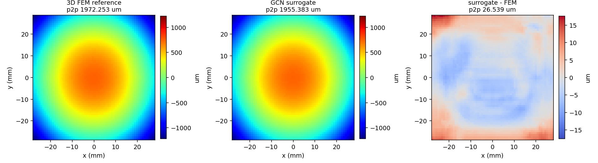

WarpStack: Warpage Sign-off and Design-Space Exploration for 2.5D/3D Chiplet Packages
Three methods from one design description — detailed 3D numerical analysis for sign-off, a physics-based reduced-order model (MOR-model) for sweeps, and WarpStack-AI, a graph-neural predictor for live optimization loops.
Coefficient-of-thermal-expansion (CTE) mismatch between the silicon, interposer, memory and substrate of a 2.5D/3D package bows the assembly as it cools from bonding to operating temperature, and a few microns of bow decide whether solder joints open or bridge. Warpage therefore has to be checked on every floorplan, stack-up and material iteration — not once at the end. WarpStack computes package warpage with three methods that share one design description, read from IEEE 3Dblox: a detailed layer-wise 3D numerical method for sign-off; a MOR-model, a physics-based compact model built once per design from the same 3D formulation; and WarpStack-AI, a graph neural network trained on the numerical output. On a 2nm CoWoS reference package with 8 HBM stacks, 2 GPU dies, 108 chiplet instances and 237 mechanical layers, the MOR-model reproduces the 3D warpage surface to within 0.036 µm in 51 µs per design point — 798,000× faster than the 40.6 s 3D solve — and WarpStack-AI predicts full warpage maps in 19.4 ms at 0.38% whole-map error across 512 held-out design points.
Why warpage decides reliability
Stacking silicon, interposers and memory bonds together materials with very different expansion rates. Cycling the package from its assembly temperature to operating temperature turns those mismatches into internal stress, and the whole structure bows and twists. Warpage is a first-order reliability risk in modern 2.5D and 3D integration:
- Opens and shorts. Where the gap between package and board opens too far, a solder joint pulls apart into an open circuit; where it closes too far, neighbouring joints bridge into a short. Whether the centre or the edge bumps are at risk depends on the sign of the bow.
- Structural damage and yield. Excessive bow also cracks dies, delaminates layers, and lowers assembly yield.
- It changes with every decision. Floorplan, stack-up and material selection all change how a package warps, so designers need a warpage answer on every iteration.
The stakes are visible at the leading edge. Industry analysis attributed the delay of NVIDIA's Blackwell to CTE mismatch between the GPU chiplets, LSI bridges, RDL interposer and substrate in TSMC's CoWoS-L package — warpage severe enough to force a redesign of the top metal layers and bump structures [1]. This is the failure mode WarpStack computes, at a speed that lets it run while the stack-up is still a choice.
Three methods, one design description
All three methods run from the same inputs and report results in the same format — warpage heatmaps, cross-sections, a 3D stack view, and peak-to-peak bow in microns — so a user or an agent can move between truth, exploration and speed without changing the design description.
| Method | What it is | Per design point | Accuracy vs 3D | Use |
|---|---|---|---|---|
| 3D numerical | Detailed layer-wise 3D finite-element analysis through the full thickness of the stack | 40.6 s | Reference | Sign-off |
| MOR-model | Physics-based compact model built once per design from the same 3D formulation — not a black-box fit to data | 51 µs | ≤ 0.036 µm local | Design-space sweeps |
| WarpStack-AI | Graph neural network trained per design on numerical ground truth | 19.4 ms | 0.38% whole-map | Live optimization loops |
Table 1. The three WarpStack methods, measured on the reference design of Section 4.
The 3D method reports the die-level active surface and the package surface separately. The MOR-model is derived from the 3D formulation itself, so it inherits that model's physics rather than learning it from examples; how it is constructed is Noveety AI's core IP. WarpStack-AI learns a package's warpage behaviour from 3D results and then returns the full map without solving.
Workflow
- Describe the package. A single structured file lists the layer stack, each layer's material, and the placement of every die or module. WarpStack also reads IEEE 3Dblox [2], so designs come straight from the 2.5D/3D-IC ecosystem without hand re-entry.
- Apply the thermal load. The package is taken from its stress-free assembly temperature to operating temperature, so expansion mismatches between layers become real bending.
- Solve or predict the shape. Run the 3D method for sign-off or the MOR-model for sweeps — or skip the solve and let WarpStack-AI predict the map.
- Read the result. Warpage heatmaps, cross-sections and peak-to-peak bow, in the same format from every method, ready to compare or pass to a script.
Every step is available from a CLI with structured JSON in and CSV/JSON out, for one design or a whole batch.
Reference design: a 2nm CoWoS package
All results in this paper are measured on one 2nm CoWoS-class package, imported directly from its IEEE 3Dblox description: eight HBM stacks of 12-high DRAM beside two GPU dies on a silicon interposer.
| Property | Value |
|---|---|
| Package | 56.2 × 57.5 mm |
| Chiplet instances | 108 |
| Die regions (stacked die columns) | 135 |
| Mechanical layers | 237 |
| Solid elements | 45,035 |
| Degrees of freedom | 169,602 |
| 3D numerical solve | 40.6 s, single core |
Table 2. The reference design as solved at FEM mesh 64.

The 3D reference answer
The detailed 3D method solves the package through its full thickness: 8 memory stacks with 12 DRAM tiers each, two large compute dies and every bond layer. On the baseline design it predicts a broad central dome falling away at the corners, 1332 µm peak-to-peak on the active surface. On this package the active surface and the continuous package surface agree to within 0.1% of peak-to-peak — the bow is global, so the die-level and package-level views coincide.

MOR-model: a design space in the time of one solve
The MOR-model is built once per design and then evaluates any design point in 51 µs. To test it on a point it was not built from, the ABF substrate modulus was stiffened from 24.0 to 28.8 GPa — a change that moves peak-to-peak warpage by +40.9 µm. Both methods were then run on the same mesh and the same load.
| Quantity | 3D numerical | MOR-model |
|---|---|---|
| Peak-to-peak warpage | 1372.7 µm | 1372.6 µm |
| Time per design point | 40.6 s | 51 µs |
| Peak-to-peak difference | reference | 0.043 µm |
| Whole-map difference | — | 0.003% |
| Largest local difference | — | 0.036 µm |
Table 3. MOR-model against a from-scratch 3D solve on the stiffened-substrate what-if. Eight further design points drawn from across the material design space were each solved in full 3D and compared: the worst whole-map difference was 0.006%.



6.1 What the speed buys
On a single core the MOR-model evaluates 70.8 million design points per hour, against 89 for the 3D method. Building it costs 17 minutes of 3D solves — about 25 single 3D runs — so it pays for itself within roughly 25 evaluations, and every evaluation after that is effectively free. That is what turns warpage from a sign-off check into something a designer can sweep.
WarpStack-AI: warpage maps in milliseconds
WarpStack-AI is trained per design on warpage fields produced by the 3D method, then predicts the full map directly from the design description. Every held-out point varies both the material set and the thermal load, and the held-out material configurations are kept entirely out of training, so the network is scored on combinations it was never shown.

| Quantity | Held-out set | Fresh 3D solves |
|---|---|---|
| Design points | 512 | 6 |
| Mean 3D peak-to-peak | 1,393 µm | 1,699 µm |
| Whole-map difference | 0.38% | 0.49% |
| Peak-to-peak error | 1.41% | 1.89% |
| Correlation with 3D | 0.9996 | 0.99996 |
Table 4. WarpStack-AI accuracy. Per design point it takes 19.4 ms against 41.54 s for the 3D method — 2,146×.
7.1 One-time cost and break-even
| Item | Cost |
|---|---|
| Training labels (1,792 design points) | 32.2 min |
| Network training | 50.8 min |
| Total one-time cost | 83.1 min |
| Per design point afterwards | 19.4 ms |
| Break-even vs solving directly | 120 design points |
Table 5. Cost to train WarpStack-AI for the reference design.
Training labels come from WarpStack's own 3D formulation, generated far more efficiently than a brute-force sweep: 1,792 labelled warpage fields in 32 minutes rather than the day that solving one design point at a time would take. Past 120 design points the network is cheaper than solving directly, and a 1,000-point sweep drops from 11.5 hours to 83 minutes. Figures in this section were measured on an Apple M3, with inference on a single CPU core.
Warpage inside an agentic design loop
WarpStack is built to be called by autonomous design agents. An agent driving floorplan, stack-up and material decisions invokes WarpStack through its CLI and structured data interface, reads back warpage maps and peak-to-peak margins, and uses them to steer the next candidate. The three methods divide the work naturally:
- Screen the whole design space with the MOR-model or WarpStack-AI.
- Optimize inside a live loop with WarpStack-AI at 19.4 ms per evaluation.
- Sign off the critical candidates with the detailed 3D method against warpage limits before tape-out and assembly.
A compare mode runs the methods side by side on the same design, so it is always visible which designs the fast paths can screen and which truly need 3D.
Scope and limitations
- Illustrative material properties. Mechanical properties for the reference design are illustrative values for the material classes involved, not calibrated 2nm, HBM4 or CoWoS process data. Absolute warpage in microns is therefore indicative rather than a prediction about specific hardware. Solver timings, speedups and the agreement between methods do not depend on those values.
- Accuracy is reported against the 3D method, at FEM mesh 64, not against measured shadow-moiré or other physical warpage data.
- Per-design models. The MOR-model and WarpStack-AI are each built for one design; a new stack-up needs a new build (17 min and 83 min respectively on the reference design).
- Loading. Results here use a single thermal step from the stress-free assembly temperature to operating temperature. Process-history effects are outside the scope of this paper.
Conclusion
WarpStack makes warpage a quantity designers can sweep rather than a check they run once. From a single 3Dblox description it offers detailed 3D analysis for sign-off, a MOR-model that reproduces the 3D surface to within 0.036 µm at 798,000× the speed, and a graph-neural predictor that returns full maps in 19.4 ms at 0.38% error. Because the fast methods are built from, and measured against, the same 3D formulation, their answers stay comparable — and every one of them is a callable step for an agentic design flow.
References
- P. Garrou, “IFTLE 607: Why NVIDIA's Blackwell Is Having Issues with TSMC CoWoS-L Technology,” 3D InCites, Oct. 2024. 3dincites.com
- IEEE Standards Association, IEEE 3537 — Standard for 3Dblox: Chiplet Connectivity and Physical Properties Description Language. standards.ieee.org/ieee/3537
- L. Williams, “Silicon Meets Reality: Why Physics Is Now a First-Order Design Constraint for Chips,” Semiconductor Digest. semiconductor-digest.com
- VSCLAB, UC Riverside — publications underlying the methods in the NoveetyAI engines. sheldonucr.github.io/published_papers